Un son est une onde continue ; un fichier est une suite de nombres. Entre les deux, il faut choisir : combien de mesures par seconde, combien de valeurs possibles, et quoi jeter. Ce chapitre est celui de ces choix.
Comprendre ce qu'est un son, ce qui le distingue d'un fichier, et le premier des deux réglages de la numérisation : la fréquence d'échantillonnage.
Un son est une variation de pression au cours du temps. C'est un signal analogique, c'est-à-dire un signal qui varie de manière continue au cours du temps — une fonction continue, si tu veux.
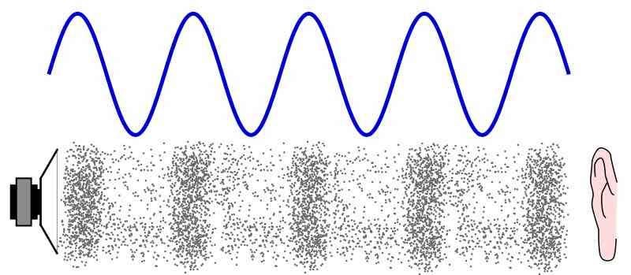
Lorsqu'un micro reçoit un son, la variation de pression atmosphérique au point où il se trouve ressemble à quelque chose comme la courbe ci-dessous :
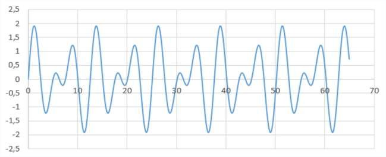
La numérisation d'un son passe par une première étape : sa transformation en signal électrique analogique par le microphone. Puis le signal électrique délivré par le microphone est numérisé par la carte son.
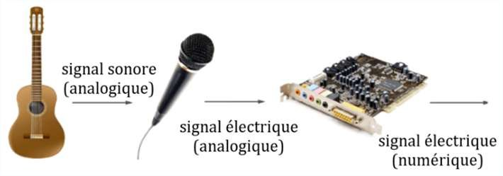
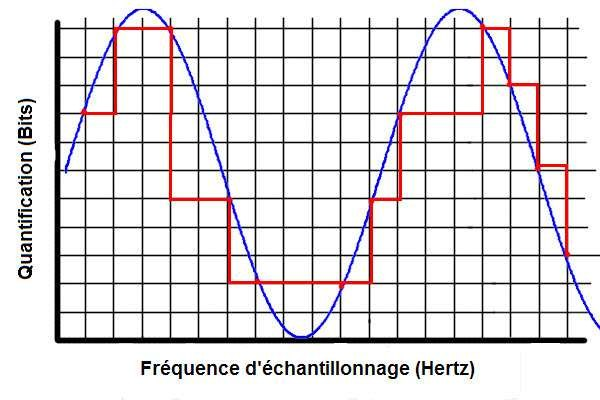
Pour numériser le signal analogique, la carte son effectue une mesure du signal à intervalle de temps régulier, que l'on appelle la période d'échantillonnage, notée Te. On dit qu'elle fait un échantillonnage.
Le nombre de mesures réalisées chaque seconde est appelé la fréquence d'échantillonnage, notée fe. On a alors la relation :
Une information codée sur 1 bit ne pourra prendre que deux valeurs (0 ou 1). Une information codée sur deux bits pourra prendre 4 valeurs (00, 01, 10, 11). Une information codée sur n bits pourra prendre 2n valeurs.
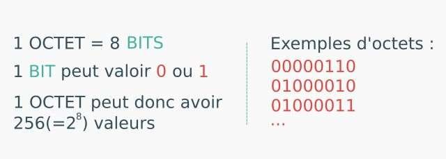
🔁 Le binaire est aussi traité en SNT, dans le module « Représenter l'information ». Un renvoi vers cette page pourrait remplacer les deux vidéos — à arbitrer : la règle du dépôt est d'intégrer plutôt que de renvoyer, mais ici le rappel est court.
Le second réglage : combien de niveaux pour coder chaque mesure. Puis le standard qui a fixé les valeurs de référence pendant quarante ans.
La valeur mesurée au moment de l'échantillonnage est une information — un nombre. Une fois numérisée, elle ne peut prendre qu'un nombre fini de valeurs (par exemple 256 valeurs si elle est codée sur 8 bits). Il s'ensuit que cette valeur ne peut pas toujours être convertie de manière exacte, si elle ne correspond pas à l'une des valeurs possibles.
La carte son doit alors procéder à une approximation. Moins il y a de valeurs possibles, plus cette approximation peut être grande.
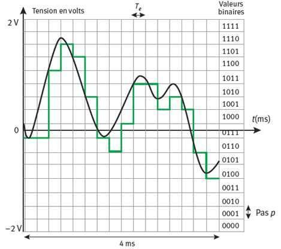
0000 à 1111 ; le tracé en escalier ne correspond pas toujours à la réalité du signal. L'écart entre deux niveaux s'appelle le pas p.Image reprise du cours de M. Van Hoorde — provenance à confirmer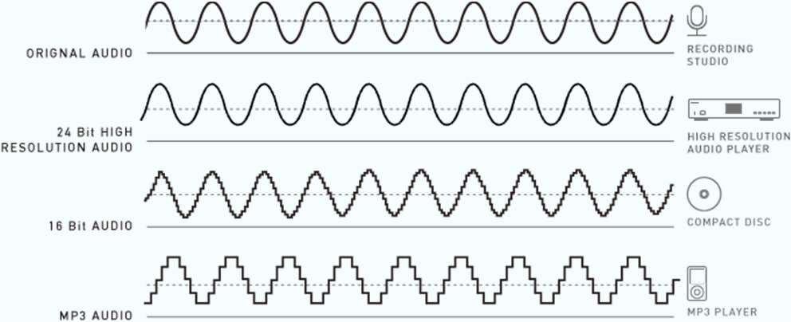
Imaginons un pèse-personne numérique, capable de peser un poids compris entre 0 et 120 kg. On s'intéresse à la numérisation de la valeur de la masse pesée. Imaginons dans un premier temps qu'il la numérise sur 4 bits.
| Valeur binaire | Masse (kg) | Valeur binaire | Masse (kg) |
|---|---|---|---|
0000 | 0 | 1000 | |
0001 | 1001 | ||
0010 | 1010 | ||
0011 | 1011 | ||
0100 | 1100 | ||
0101 | 1101 | ||
0110 | 1110 | ||
0111 | 1111 | 120 |
0110. Il en résulte une imprécision de 3 kg, soit une erreur de 7 % environ.
Une seconde au format CD correspond donc à 44 100 × 16 = 705 600 bits — à multiplier par deux s'il s'agit d'un son stéréo.
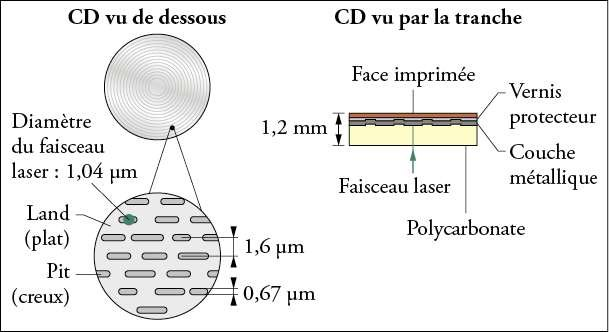
assets/. Repérée dans le fichier de vérification.
Sur le graphique ci-dessous, on a représenté en bleu la tension amplifiée ua(t) issue d'un microphone, et en rouge la tension un(t) envoyée par la carte son à son module de conversion en binaire.
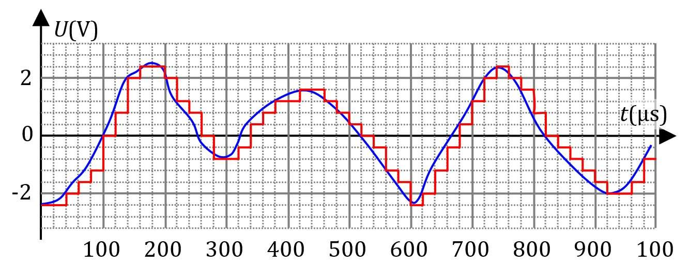
Combien pèse une chanson, et pourquoi celle de ton téléphone pèse cent fois moins que celle d'un CD.
La taille d'un fichier est mesurée en octet : 1 octet (o) = 8 bits, soit 256 valeurs possibles. Les multiples des octets peuvent être calculés de deux manières :
| Manière | Règle | Exemples |
|---|---|---|
| Classique (décimale) | on multiplie par 1 000 | 1 ko = 10³ o = 1 000 o · 1 Mo = 10⁶ o |
| Binaire | on multiplie par 1 024 | 1 kio = 2¹⁰ o = 1 024 o · 1 Mio = 2²⁰ o = 1 048 576 o |
Remarque le « i » qui apparaît lorsqu'on exprime la taille en multiples binaires : kio, Mio, Gio. On utilisera dans la suite du cours la manière classique.
Dans le document ci-contre, tu trouves ce qu'affiche l'ordinateur du professeur lorsqu'il ouvre les propriétés du fichier .pptx de ce cours.
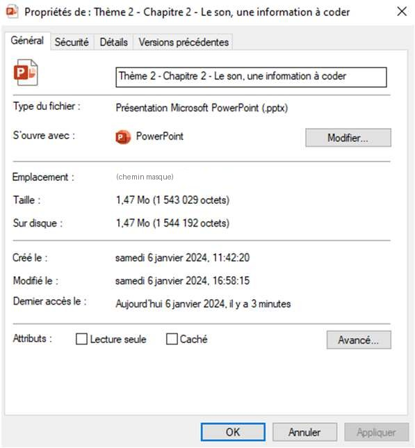
| Symbole | Nom de la grandeur | Unité |
|---|---|---|
| fe | ||
| Δt | ||
| N | ||
| c |
À l'origine — milieu des années 80, avec la création des CD — les fichiers son n'étaient pas compressés : la compression et la décompression au moment de la lecture demandent une puissance de calcul qui n'existait pas alors. Le format wav est un format non compressé.
Le problème de ces fichiers, c'est qu'ils sont très volumineux — plus de 300 Mo par heure en son mono. Il faut donc beaucoup d'espace mémoire pour les stocker, et une connexion à large bande passante pour les écouter en streaming. D'où l'apparition des formats de compression. Il en existe de deux types.
Lors de la compression avec perte, une quantité plus ou moins importante d'information est perdue. L'algorithme est conçu de telle manière que cette perte soit le moins audible possible.
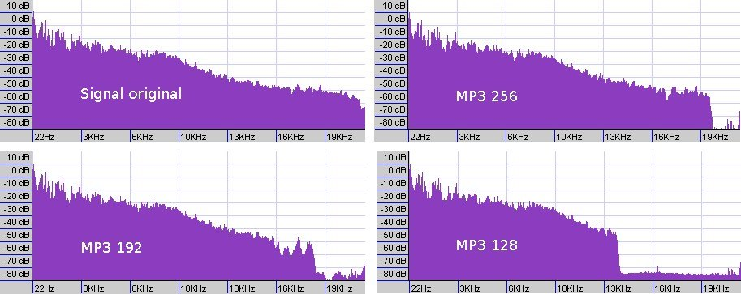
Le taux de compression de ces formats est paramétrable par l'utilisateur. Plus ce taux est important, plus la perte de qualité sonore est importante. En MP3, les taux les plus courants sont 128 kb/s, 256 kb/s et 320 kb/s.
La différence entre les formats de compression tient à leur statut « ouvert » ou « propriétaire », et à leur capacité à offrir un meilleur rapport qualité/taille. Le MP3 est dominant pour des raisons historiques — donc de compatibilité des lecteurs — mais ce n'est pas le meilleur : à ce jour, c'est OGG Vorbis.
FLAC : Free Lossless Audio Codec. Ce sont des algorithmes de compression qui ne détruisent pas d'information : il est possible de récupérer l'intégralité des informations — et donc de la qualité du son — contenues dans le fichier non compressé. Leur taux de compression est cependant bien moindre que celui des formats avec perte : 20 à 40 %.
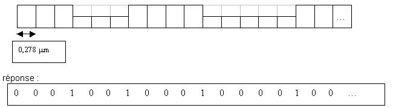